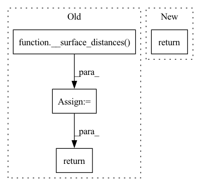

Pattern ID :1007

Before Change
)
hd1 = __surface_distances(result_array, reference_array, params["subject_spacing"])
hd2 = __surface_distances(reference_array, result_array, params["subject_spacing"])
hd_95 = numpy.percentile(numpy.hstack((hd1, hd2)), 95)
return torch.tensor(hd_95)
def fetch_metric(metric_name):
After Change
def hd95(inp, target, params):
return hd_generic(inp, target, params, 95)
def hd100(inp, target, params):
In pattern: SUPERPATTERN
Frequency: 3
Non-data size: 4
Instances
Fragment ID: 4808569
Project Name: cbica/gandlf
Commit Name: e3702eee18d001070833d88572656d18921f3a20
Time: 2021-06-26
Author: sarthak.pati@hotmail.com
File Name: GANDLF/metrics.py
M Class Name: AnonimousClass
N Class Name: AnonimousClass
M Method Name: hd95(3)
N Method Name: hd95(3)
M Parent Class:
N Parent Class:
M File Name: GANDLF/metrics.py
N File Name: GANDLF/metrics.py
M Start Line: 225
M End Line: 240
N Start Line: 244
N End Line: 244
'>
Before Change
if result.GetSize() != reference.GetSize():
raise ValueError("The reference and result images should have same shape")
hd1 = __surface_distances(result_array, reference_array, voxelspacing, connectivity)
hd2 = __surface_distances(reference_array, result_array, voxelspacing, connectivity)
return numpy.percentile(numpy.hstack((hd1, hd2)), 95)
def fetch_metric(metric_name):
After Change
hd1 = __surface_distances(result_array, reference_array, params["subject_spacing"])
hd2 = __surface_distances(reference_array, result_array, params["subject_spacing"])
hd_95 = numpy.percentile(numpy.hstack((hd1, hd2)), 95)
return torch.tensor(hd_95)
def fetch_metric(metric_name):
'>
Fragment ID: 4808568
Project Name: cbica/gandlf
Commit Name: d781f5415a19cdd0124c64364e64cf0a85461a63
Time: 2021-06-25
Author: sarthak.pati@hotmail.com
File Name: GANDLF/metrics.py
M Class Name: AnonimousClass
N Class Name: AnonimousClass
M Method Name: hd95(3)
N Method Name: hd95(3)
M Parent Class:
N Parent Class:
M File Name: GANDLF/metrics.py
N File Name: GANDLF/metrics.py
M Start Line: 225
M End Line: 235
N Start Line: 225
N End Line: 232
'>
Before Change
one_hot(target, params["model"]["class_list"]).squeeze(-1).cpu().numpy()
)
hd1 = __surface_distances(result_array, reference_array, params["subject_spacing"])
hd2 = __surface_distances(reference_array, result_array, params["subject_spacing"])
hd = numpy.percentile(numpy.hstack((hd1, hd2)), percentile)
return torch.tensor(hd)
def hd95(inp, target, params):
After Change
hd1 = __surface_distances(result_array[:, i, ...].squeeze(0), reference_array[:, i, ...].squeeze(0))
hd2 = __surface_distances(reference_array[:,i,...].squeeze(0), result_array[:,i,...].squeeze(0), params["subject_spacing"])
hd += numpy.percentile(numpy.hstack((hd1, hd2)), percentile)
return torch.tensor(hd/params["model"]["num_classes"])
def hd95(inp, target, params):
'>
Fragment ID: 4808573
Project Name: cbica/gandlf
Commit Name: cfabaa951237df401e81087f54bb2e05358ae687
Time: 2021-08-03
Author: sarthak.pati@hotmail.com
File Name: GANDLF/metrics.py
M Class Name: AnonimousClass
N Class Name: AnonimousClass
M Method Name: hd_generic(4)
N Method Name: hd_generic(4)
M Parent Class:
N Parent Class:
M File Name: GANDLF/metrics.py
N File Name: GANDLF/metrics.py
M Start Line: 225
M End Line: 233
N Start Line: 225
N End Line: 236